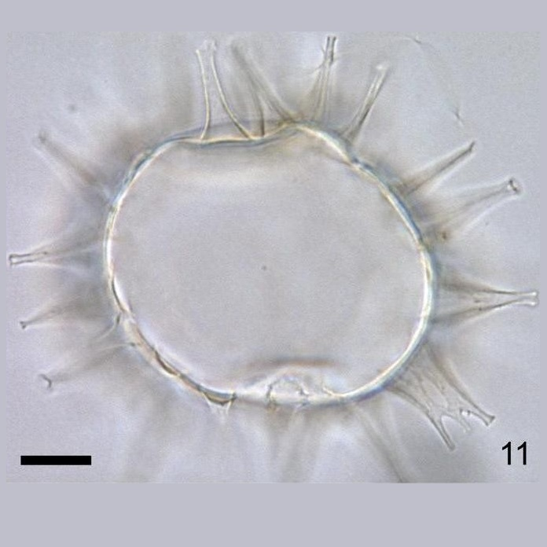
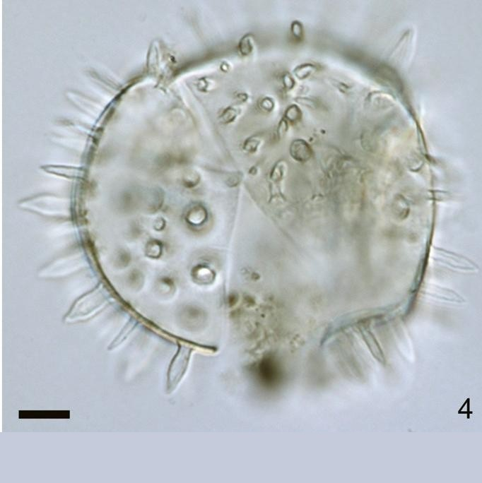
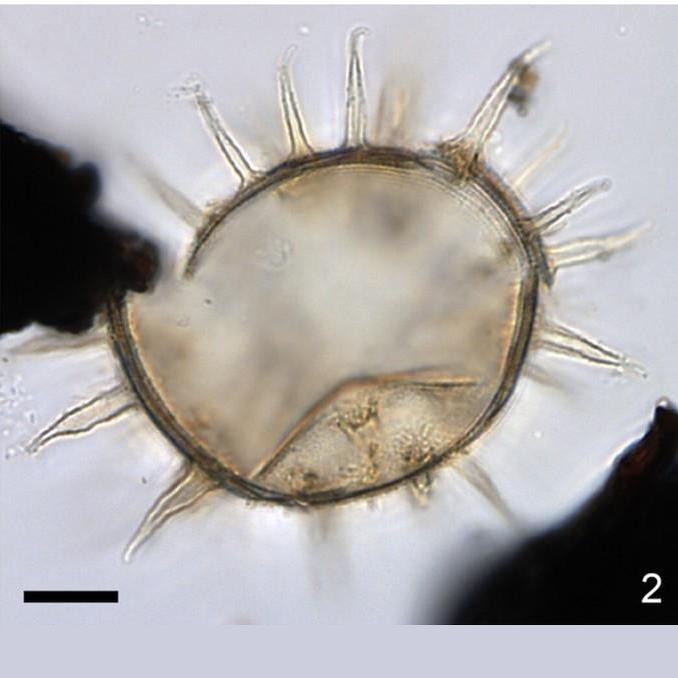
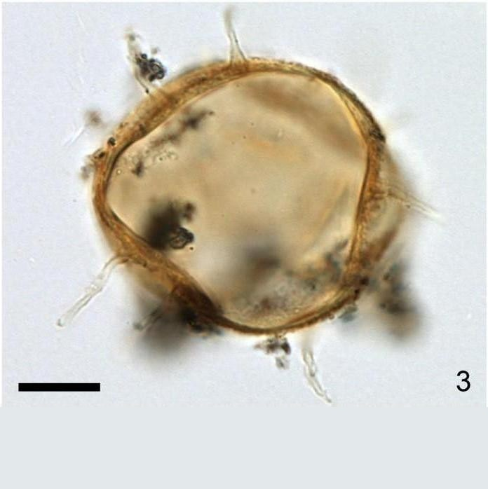
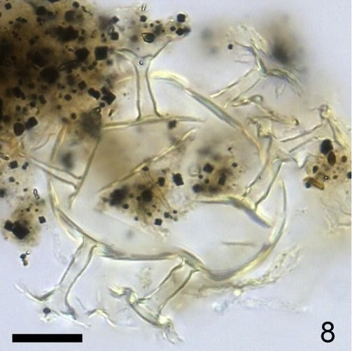
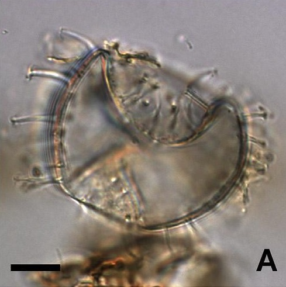
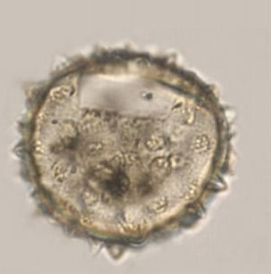
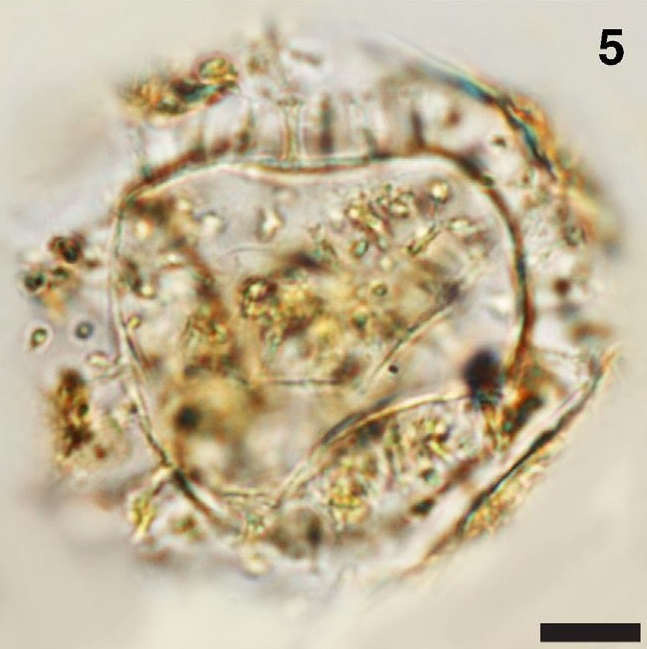

CYSTS LIST
LINGULODINIUM/MELITASPHAERIDIUM
Surface |
Shape |
Remarks |
Species |
Central body (um.) |
Process (um.) |
Image |
Finelygranulate |
Spherical |
2 or 3 processes fused along |
Dapsilidiniumpastielsii | 37 to 56 (D) |
8.5 to 18 (D) |
 |
PsilateInner thickerOuter thinner |
Spherical |
Blade-shapedLarge circular baseBulbous to base |
Lingulodiniumhemicystum | 50 to 65 (D) |
5 to 13 (D) |
 |
GranulateTransparent |
Spherical |
Hollow to fibrousDistal tips closedSpinulaePointed tipSmooth surface |
Lingulodiniummachaerophorum | 36 to 44 (D) |
2 to 21 (L) |
 |
Coarsely granular |
Subspherical |
Coarsely granularFlexous, slender. |
Melitasphaeridium angustum | 33 to 43 (L)30 to 37 (W) |
9.5 to 13 (L) |
 |
Finely granular |
Subspherical |
Finely granularRigid, tubular. |
Melitasphaeridium choanophorum | 28 to 42 (D) |
9 to 21 (L) |
 |
GranularTransparent |
Spherical to subspherical |
Hollow to fibrousAcuminate or capitateTips minutely hooked. |
Operculodiniumcentrocarpum | 32 to 59.5 (D) |
0.5 to 17.5 (L) |
 |
FibroreticulateTransparent |
Spherical |
Hollow to fibrousMany tips processesSize |
Operculodiniumisraelianum | 38 to 69 (D) |
3 to 10 (L) |
|
GranulateTransparent |
Spherical |
Hollow to fibrousVery smooth base of processes |
Operculodiniumjanduchenei | 27 to 38 (D) |
4 (L) |
 |
Finely granulateTransparent |
Spherical |
Hollow to fibrousSingle or clustersDistally open with minutely aculeate distal margins. |
Polysphaeridiumzoharyi | 40 to 84.8 (D) |
2 to 21 (L) |
 |